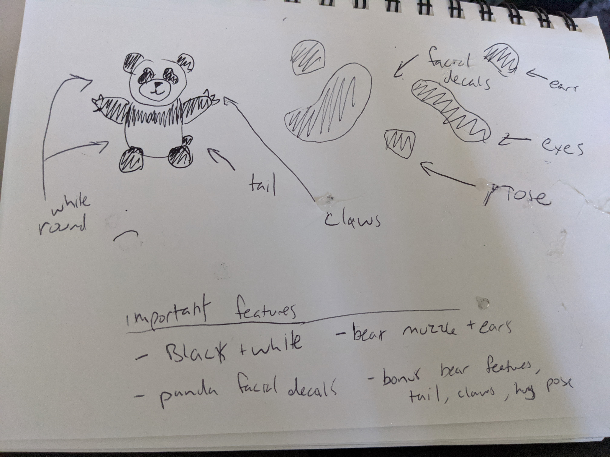
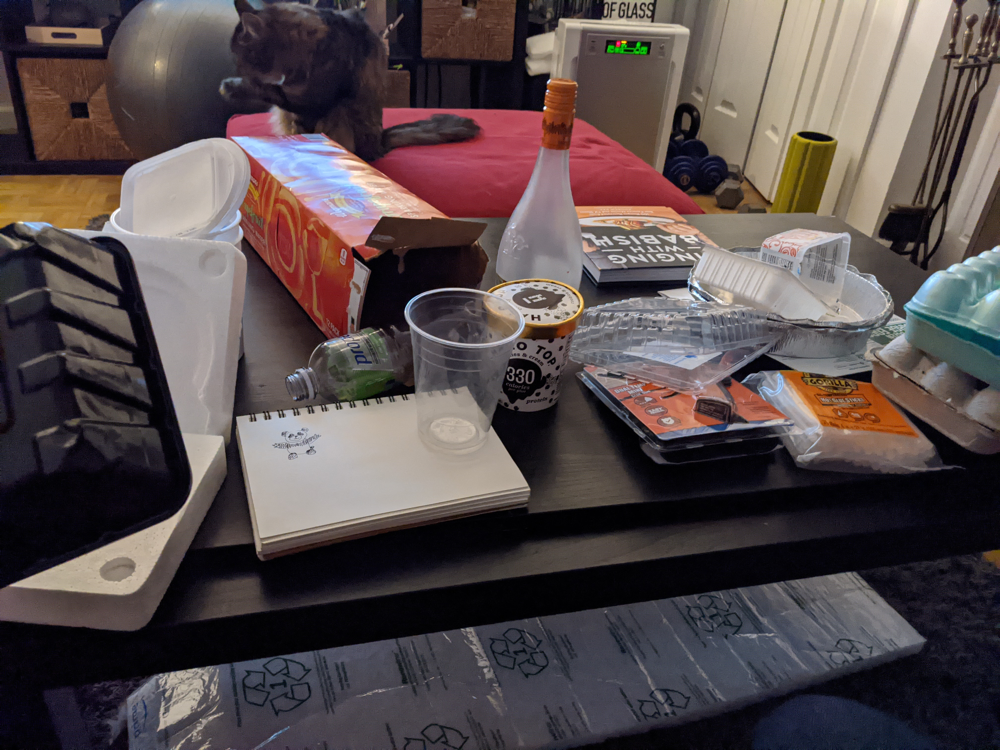
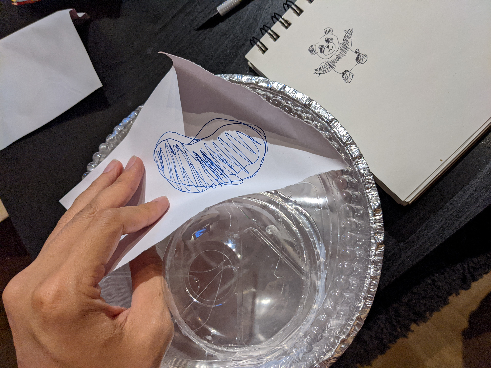
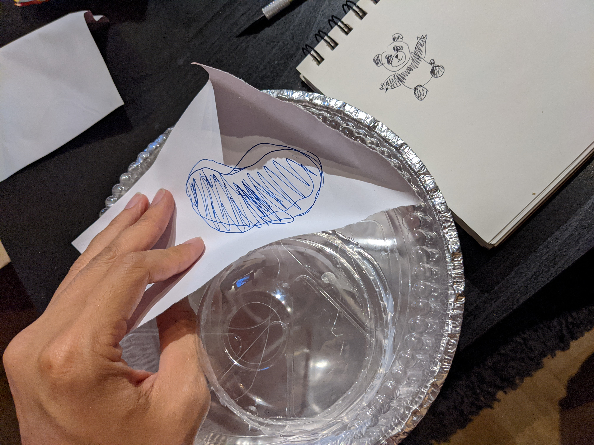
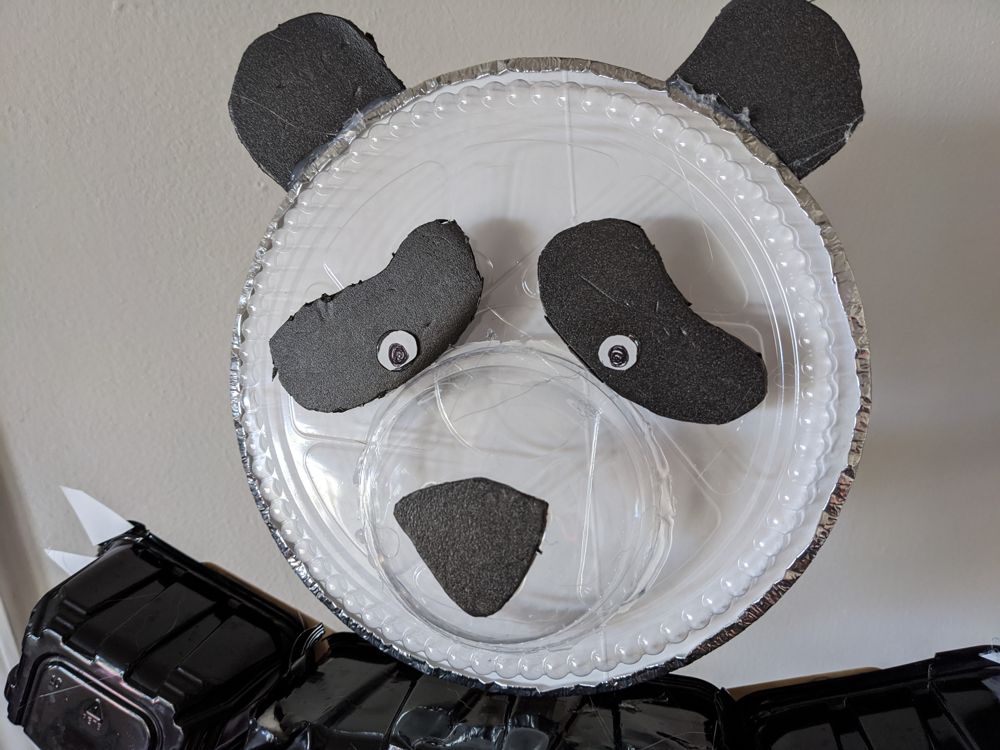
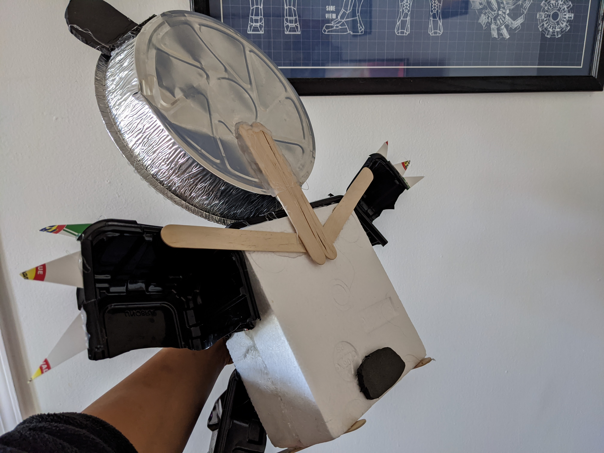
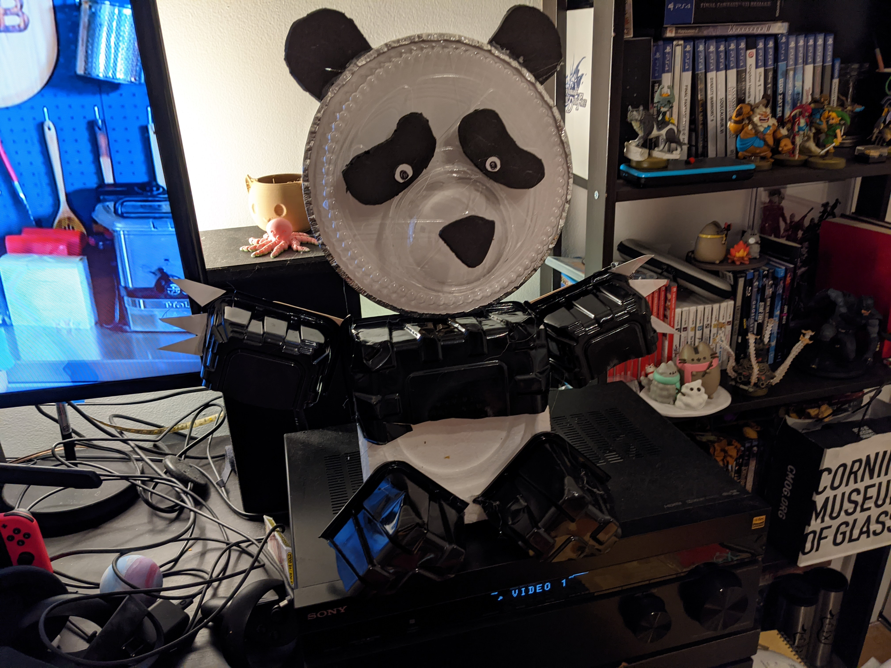
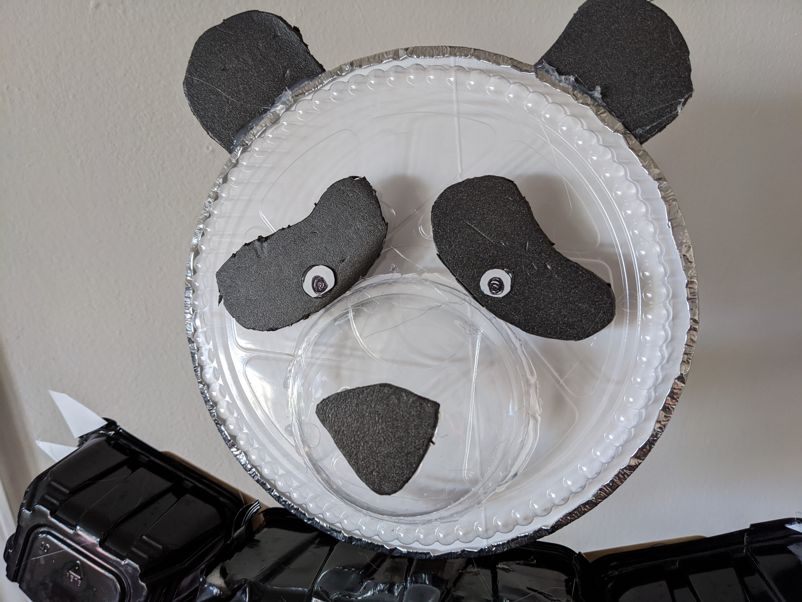
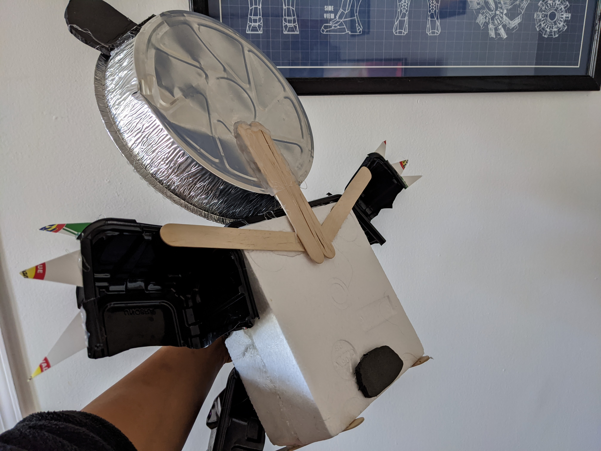
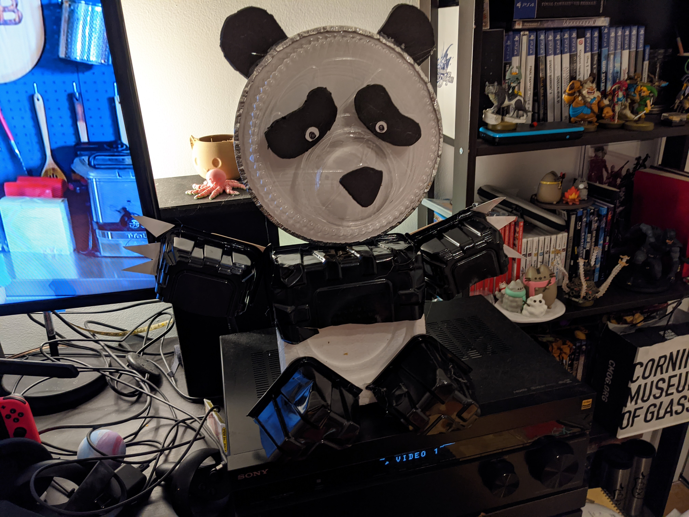

Ideation & Prototyping Week 2
“Giant Panda.” Wikipedia, Wikimedia Foundation, 5 Sept. 2020, en.wikipedia.org/wiki/Giant_panda.
“Giant Panda.” WWF, World Wildlife Fund, www.worldwildlife.org/species/giant-panda. I really like pandas since I think they best represent my spirit animal, big, capable of wild things, but would rather sit around and peacefully eat bamboo. I also really liked the kung-fu panda movie and how cute and fluffy they look.  By sketching my panda, I was able to simplify the forms and point out an important feature to focus on that makes a panda recognizable. For me what makes a panda is that it has bear features compared to something like a dog are things such as its distinct muzzle and round ears. Being black and white is what separates a panda and a regular brown bear, and of course its specific facial markings.  The first thing I did was stop recycling my recycles, washing, and saving everything.
 I laid out some of the materials and tried to figure out what would work where and how.

I laid out some of the materials and tried to figure out what would work where and how.

 I made a stencil with some simple paper and pen and traced my drawing on some black styrofoam I got from a beef packaging I think. I repeated the process for the nose, ears, tail, and eye decals.

I had a leftover takehome container from a restaurant that I used for the head, I cut out a circle from some white cardboard that I placed in the container and used a smoothie top for the muzzle.

The body base is made from two styrofoam blocks that I hot glued together and I used some black berry containers that I cut up for the arms, legs, and upper body that I also hot glued together with popsicle sticks to help.

I finished up the build with some eyes I cut out of the white cardboard and drew pupils with a black pen, along with some claws I cut from the same white cardboard. I was pretty happy with the outcome, as a bonus, he also sits up like a teddy bear. Overall it was a pretty fun project with an interesting design limitation using recycled materials. I feel like I haven't gotten a chance to exercise my creativity in this way since elementary school.
I made a stencil with some simple paper and pen and traced my drawing on some black styrofoam I got from a beef packaging I think. I repeated the process for the nose, ears, tail, and eye decals.

I had a leftover takehome container from a restaurant that I used for the head, I cut out a circle from some white cardboard that I placed in the container and used a smoothie top for the muzzle.

The body base is made from two styrofoam blocks that I hot glued together and I used some black berry containers that I cut up for the arms, legs, and upper body that I also hot glued together with popsicle sticks to help.

I finished up the build with some eyes I cut out of the white cardboard and drew pupils with a black pen, along with some claws I cut from the same white cardboard. I was pretty happy with the outcome, as a bonus, he also sits up like a teddy bear. Overall it was a pretty fun project with an interesting design limitation using recycled materials. I feel like I haven't gotten a chance to exercise my creativity in this way since elementary school.
home
while (!deck.isInOrder()) {
print 'Iteration ' + i;
deck.shuffle();
i++;
}
print 'It took ' + i + ' iterations to sort the deck.';